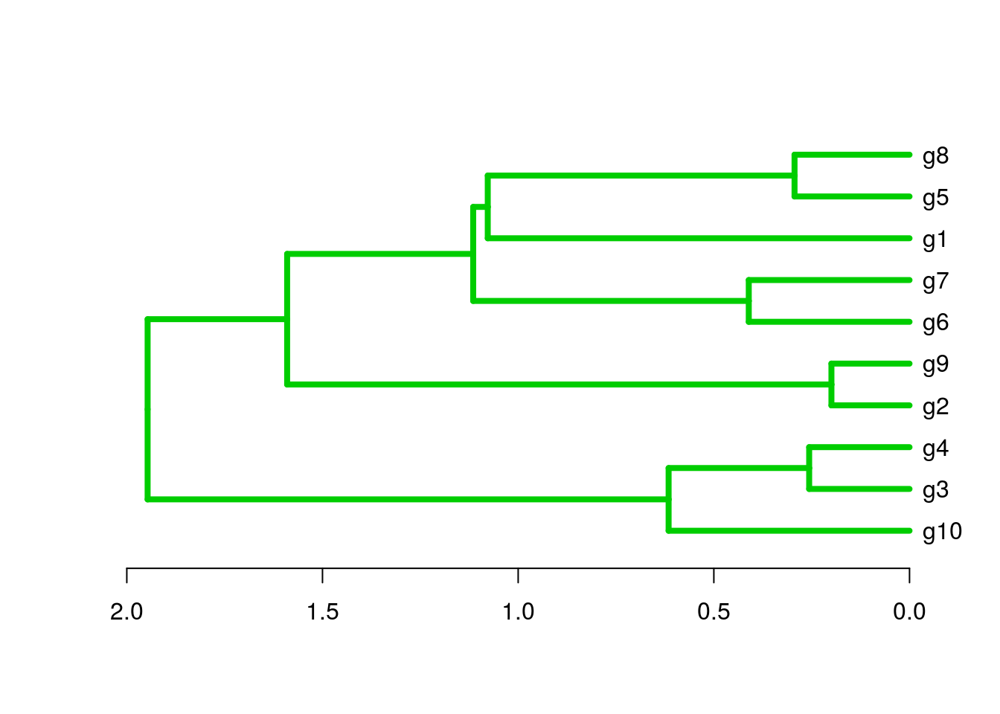

Data Preprocessing
Scaling
## Sample data set
set.seed(1410)
y <- matrix(rnorm(50), 10, 5, dimnames=list(paste("g", 1:10, sep=""),
paste("t", 1:5, sep="")))
dim(y)
## [1] 10 5
## Scaling
yscaled <- t(scale(t(y))) # Centers and scales y row-wise
apply(yscaled, 1, sd)
## g1 g2 g3 g4 g5 g6 g7 g8 g9 g10
## 1 1 1 1 1 1 1 1 1 1
Distance Matrices
Euclidean distance matrix
dist(y[1:4,], method = "euclidean")
## g1 g2 g3
## g2 4.793697
## g3 4.932658 6.354978
## g4 4.033789 4.788508 1.671968
Correlation-based distance matrix
Correlation matrix
c <- cor(t(y), method="pearson")
as.matrix(c)[1:4,1:4]
## g1 g2 g3 g4
## g1 1.00000000 -0.2965885 -0.00206139 -0.4042011
## g2 -0.29658847 1.0000000 -0.91661118 -0.4512912
## g3 -0.00206139 -0.9166112 1.00000000 0.7435892
## g4 -0.40420112 -0.4512912 0.74358925 1.0000000
Correlation-based distance matrix
d <- as.dist(1-c)
as.matrix(d)[1:4,1:4]
## g1 g2 g3 g4
## g1 0.000000 1.296588 1.0020614 1.4042011
## g2 1.296588 0.000000 1.9166112 1.4512912
## g3 1.002061 1.916611 0.0000000 0.2564108
## g4 1.404201 1.451291 0.2564108 0.0000000
Hierarchical Clustering with hclust
Hierarchical clustering with complete linkage and basic tree plotting
hr <- hclust(d, method = "complete", members=NULL)
names(hr)
## [1] "merge" "height" "order" "labels" "method" "call"
## [7] "dist.method"
par(mfrow = c(1, 2)); plot(hr, hang = 0.1); plot(hr, hang = -1)

Tree plotting I
plot(as.dendrogram(hr), edgePar=list(col=3, lwd=4), horiz=T)

Tree plotting II
The ape library provides more advanced features for tree plotting
library(ape)
plot.phylo(as.phylo(hr), type="p", edge.col=4, edge.width=2,
show.node.label=TRUE, no.margin=TRUE)

Tree Cutting
Accessing information in hclust objects
hr
##
## Call:
## hclust(d = d, method = "complete", members = NULL)
##
## Cluster method : complete
## Number of objects: 10
## Print row labels in the order they appear in the tree
hr$labels[hr$order]
## [1] "g10" "g3" "g4" "g2" "g9" "g6" "g7" "g1" "g5" "g8"
Tree cutting with cutree
mycl <- cutree(hr, h=max(hr$height)/2)
mycl[hr$labels[hr$order]]
## g10 g3 g4 g2 g9 g6 g7 g1 g5 g8
## 3 3 3 2 2 5 5 1 4 4
Heatmaps
With heatmap.2
All in one step: clustering and heatmap plotting
library(gplots)
heatmap.2(y, col=redgreen(75))

With pheatmap
All in one step: clustering and heatmap plotting
library(pheatmap); library("RColorBrewer")
pheatmap(y, color=brewer.pal(9,"Blues"))

Customizing heatmaps
Customizes row and column clustering and shows tree cutting result in row color bar. Additional color schemes can be found here.
hc <- hclust(as.dist(1-cor(y, method="spearman")), method="complete")
mycol <- colorpanel(40, "darkblue", "yellow", "white")
heatmap.2(y, Rowv=as.dendrogram(hr), Colv=as.dendrogram(hc), col=mycol,
scale="row", density.info="none", trace="none",
RowSideColors=as.character(mycl))

K-Means Clustering with PAM
Runs K-means clustering with PAM (partitioning around medoids) algorithm and shows result in color bar of hierarchical clustering result from before.
library(cluster)
pamy <- pam(d, 4)
(kmcol <- pamy$clustering)
## g1 g2 g3 g4 g5 g6 g7 g8 g9 g10
## 1 2 3 3 4 4 4 4 2 3
heatmap.2(y, Rowv=as.dendrogram(hr), Colv=as.dendrogram(hc), col=mycol,
scale="row", density.info="none", trace="none",
RowSideColors=as.character(kmcol))

K-Means Fuzzy Clustering
Performs k-means fuzzy clustering
library(cluster)
fannyy <- fanny(d, k=4, memb.exp = 1.5)
round(fannyy$membership, 2)[1:4,]
## [,1] [,2] [,3] [,4]
## g1 1.00 0.00 0.00 0.00
## g2 0.00 0.99 0.00 0.00
## g3 0.02 0.01 0.95 0.03
## g4 0.00 0.00 0.99 0.01
fannyy$clustering
## g1 g2 g3 g4 g5 g6 g7 g8 g9 g10
## 1 2 3 3 4 4 4 4 2 3
## Returns multiple cluster memberships for coefficient above a certain
## value (here >0.1)
fannyyMA <- round(fannyy$membership, 2) > 0.10
apply(fannyyMA, 1, function(x) paste(which(x), collapse="_"))
## g1 g2 g3 g4 g5 g6 g7 g8 g9 g10
## "1" "2" "3" "3" "4" "4" "4" "2_4" "2" "3"
Multidimensional Scaling (MDS)
Performs MDS analysis on the geographic distances between European cities
loc <- cmdscale(eurodist)
## Plots the MDS results in 2D plot. The minus is required in this example to
## flip the plotting orientation.
plot(loc[,1], -loc[,2], type="n", xlab="", ylab="", main="cmdscale(eurodist)")
text(loc[,1], -loc[,2], rownames(loc), cex=0.8)

Principal Component Analysis (PCA)
Performs PCA analysis after scaling the data. It returns a list with class prcomp that contains five components: (1) the standard deviations (sdev) of the principal components, (2) the matrix of eigenvectors (rotation), (3) the principal component data (x), (4) the centering (center) and (5) scaling (scale) used.
library(scatterplot3d)
pca <- prcomp(y, scale=TRUE)
names(pca)
## [1] "sdev" "rotation" "center" "scale" "x"
summary(pca) # Prints variance summary for all principal components.
## Importance of components%s:
## PC1 PC2 PC3 PC4 PC5
## Standard deviation 1.3611 1.1777 1.0420 0.69264 0.4416
## Proportion of Variance 0.3705 0.2774 0.2172 0.09595 0.0390
## Cumulative Proportion 0.3705 0.6479 0.8650 0.96100 1.0000
scatterplot3d(pca$x[,1:3], pch=20, color="blue")

Additional Exercises
See here